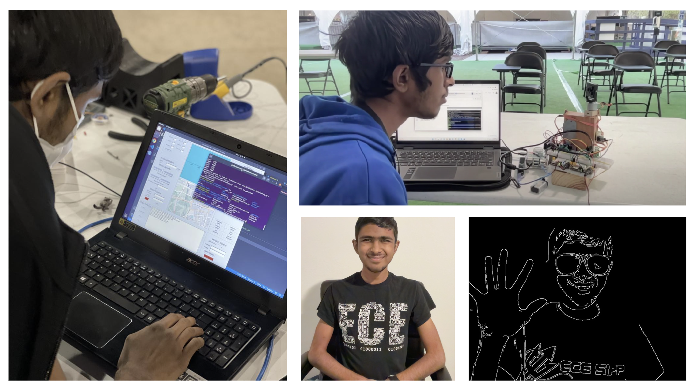

My name is Girish Krishnan. I am currently completing my undergraduate degree in Electrical Engineering with a depth in Machine Learning and Controls at UC San Diego. I am interested in the applications of robotics, signal processing, and machine learning in medicine. This portfolio website showcases my projects and experiences in research and teaching.
I am currently:
